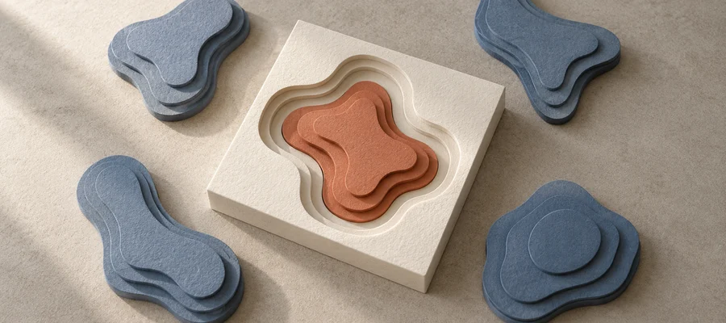
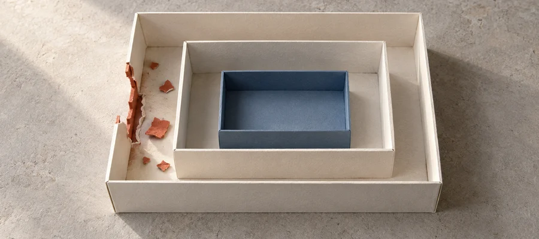

1. Announcing ExploitHunter.app
Strong wide; evidence slip partly cropped at square right edge. Dedicated square advised before final promotion.
2. Semantic Vector Search
Best natural square fit; one unmistakable central contour.
Ivory


Warm charcoal
3. Don't Fear the Model Router
Good central routing relationship; outer paths cropped but choice survives.
4. Into the Breach
Strong compact containment; smaller paper fragments soften at 96px.
Ivory


Warm charcoal
5. Fight Evils with Evals!
Clear wide comparison; square crop loses part of left frame, and 96px regression notch is small.
6. llm:// Connection Strings
Wide connection strong; square crops blocks, leaving connector as emblem. Dedicated square advised.
7. Deep Postgres: Part 2
Strong join metaphor, connection survives square and 96px.
8. Deep Postgres: Part 1
Use v2; v1 matched shape too neatly. v2 incompatible shoulder clearer; wide/shallow crop may clip top key, so use contain/recompose for final.